Рамешки
Природа
Петроозерье (Оршинский Мох)
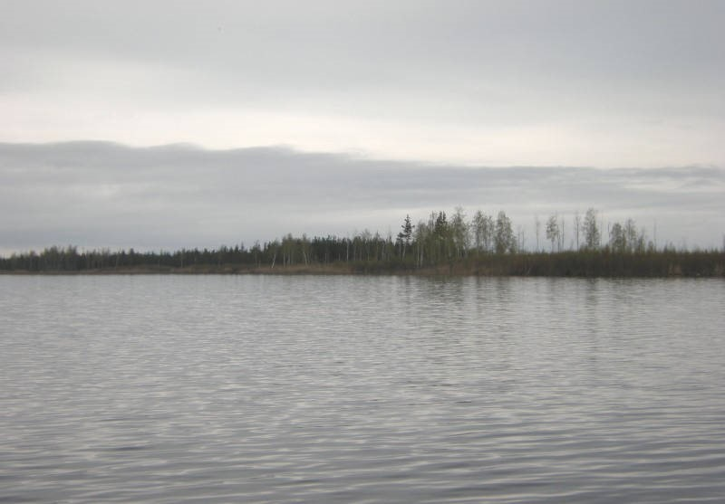
Оршинский Мох озеро Великое
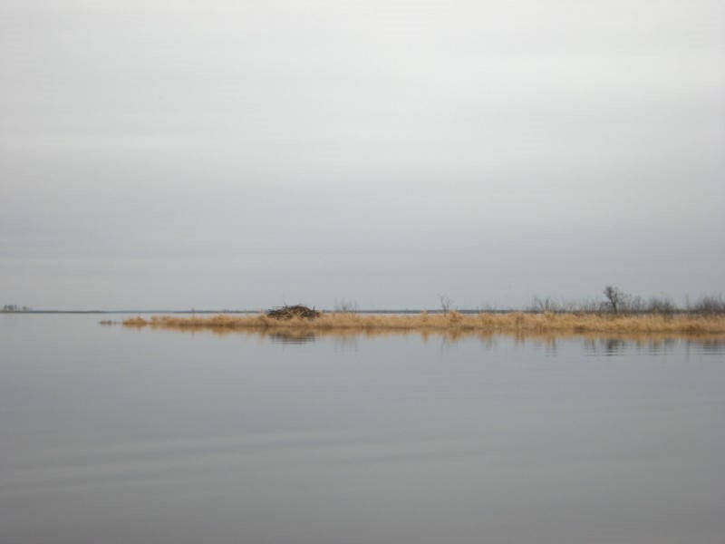
Оршинский Мох бобровая хатка на озере Белом
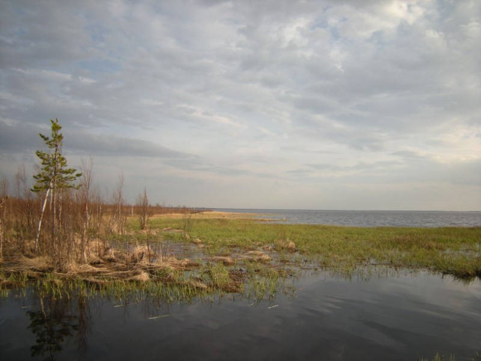
Оршинский Мох протока между озерами
Уникальной жемчужиной природы является Петроозерье (Оршинский Мох), состоящее из обширных клюквенных торфяных болот и системы озер. Петро́вское — деревня в Рамешковском районе, расположенная на острове среди Оршинско-Петровских озёр: с запада — озеро Глубокое, с востока — залив Озерце озера Великого, южнее деревни остров омывается озером Белым. Сами озёра находятся в центре крупнейшего в Тверской области болотного массива Оршинский Мох. Рядом находятся ещё 2 деревни — Заречье и Остров. Все три островные деревни называют Петроозерье. Непроходимые топи делают путешествие по этим местам крайне опасным. В целом в районе под водой рек и озер находится 2,8% территории, что почти в два раза выше среднеобластного показателя. Общая протяженность естественных водоемов: рек и ручьев — 425 км. Рамешковский район — один из самых «заболоченных» районов Тверской области. 12,4% площади района покрыта болотами. Это в два раза выше среднеобластной нормы. Здесь находится 12 крупных верховых болот, в том числе огромный болотный массив Оршинский Мох (84,4 тыс.га), и множество небольших низинных болотцев. Семь болот взяты под охрану как памятники природы.
Рамешковский парк
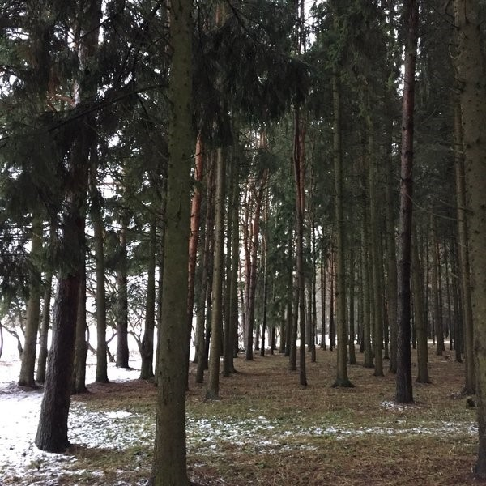
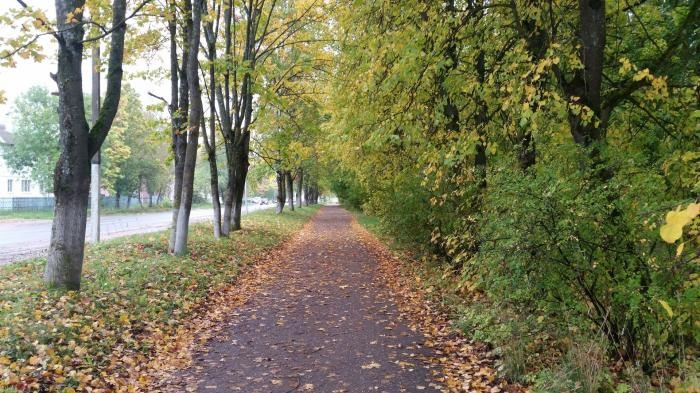
Занимает территорию – 1 га. Деревья: лиственница сибирская, сосна обыкновенная, ель европейская
Трехречье
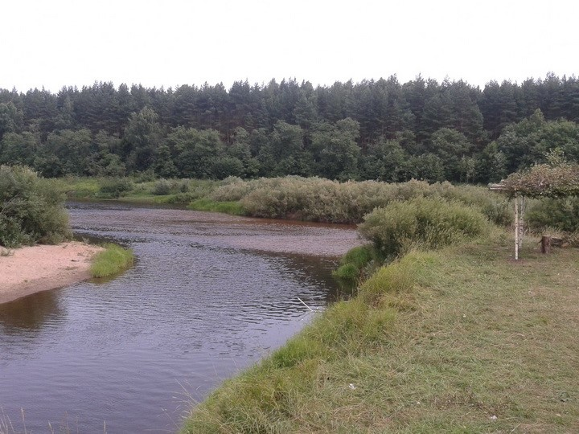
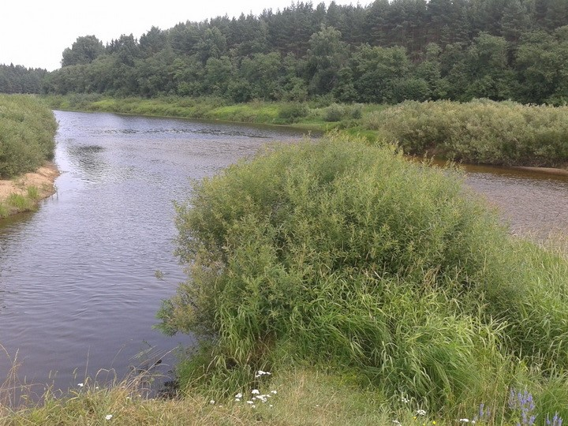
Трёхречье Кузьмы-Демиана - место впадения реки Городня в реку Дрезну, а затем в реку Медведица. Недалеко от этого места находилось имение Римского-Корсакова, которое позже купил граф Сологуб.
Ильинский источник
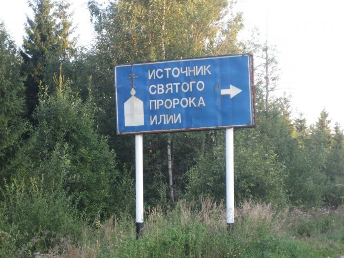
Вода в источнике Илии пророка вкусная, ледяная даже в самую жаркую пору и кристально чистая. Она может храниться больше года – не испортится.
Бор Ширкун
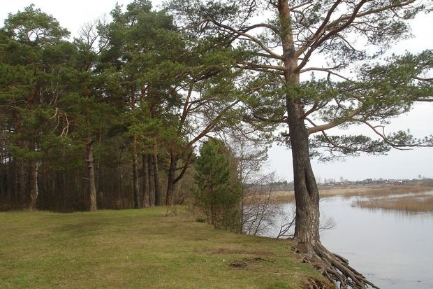
Бор «Ширкун», пл.15 га. Участок леса с преобладанием сосновых насаждений. в 10,5 км от Рамешек. С 30 июля 1986 года сосновый бор Ширкун является памятником природы регионального значения, а с 13 января 2015 года входит в перечень особо охраняемых территорий регионального значения Тверской области. Название, по версии И.М. Киконкова, образовалось в связи с тем, что в период весеннего паводка, именно в этом месте река очень широко разливается, отсюда и название места.
Кидомля
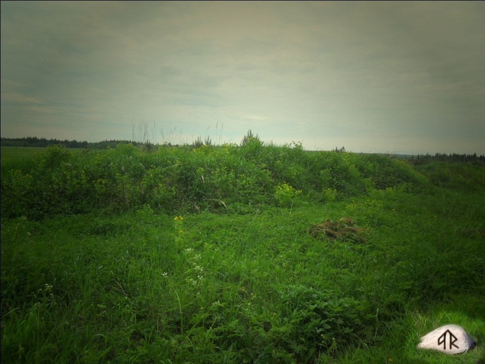
Памятники археологии — курганные могильники «Кидомля-1», «Кидомля-2» и «Кидомля-3». Эти комплексы погребальных памятников считаются культурно-историческим наследием, они датируются 10–11 веками. Могильники находятся на территории формирования древнерусской народности и отражают процесс христианизации населения того времени, содержат ценную информацию о погребальных обрядах и торговых связях в период раннего феодализма. Кидомля - карельское слово, предположительное значение «земля страданий», земля захоронений (но не кладбище). Другой же вариант говорит, что Кидомля переводится, как «камни у воды». Урочище Кидомля находится в лесу. Насчитывает 48 насыпей высотой от 0,2 до 1,0 м, диаметром от 2 до 6 м.
Парк Толстиково
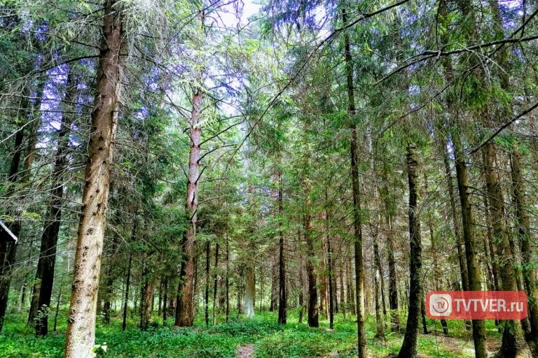
Парк Толстиково, площадь 4,5 га. Памятник садово-паркового искусства ХVIII- ХIХ вв., расположен в д.Толстиково на правом берегу р.Большая Кушалка, на возвышенном месте. Произрастают серебристый тополь, тополь черный, липа, ель, сосна, осина, клен платановидный и др. Толстиково – усадьба второй половины ХIХ в. Главный дом – памятник архитектуры.
Парк Михнево
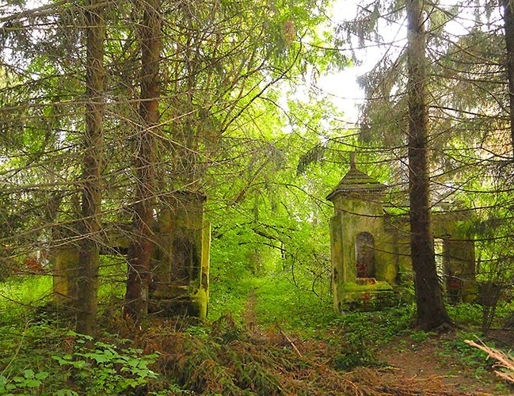
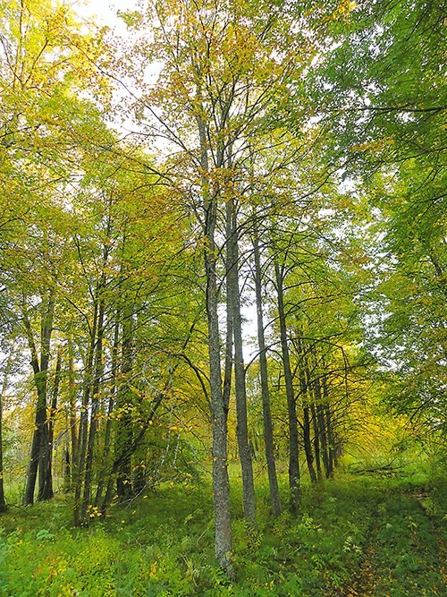
Липовая аллея
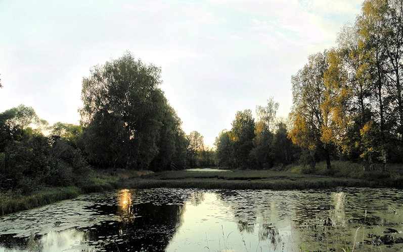
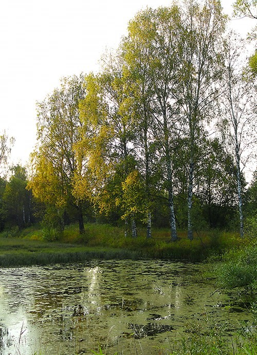
Искусственные каскадные пруды
Комплекс усадьбы выстроен в начале 19 века и принадлежал семье Трубниковых. Наиболее известен из семьи Арсений Никанорович Трубников, получивший имение в 1860-х годах. Один из активных деятелей Тверского губернского земского собрания, инженер-полковник. Парк Михнево, площадь 2,5 га. Существует около 160 лет. Памятник архитектуры и истории конца 18-начала 19вв. На территории безымянный ручей с плотиной и прудами, северная часть- радиальная липовая аллея, имеются посадки ели, можжевельника, акации, а за полями- сосновый лес по правому берегу реки Медведица.
Кузнецово
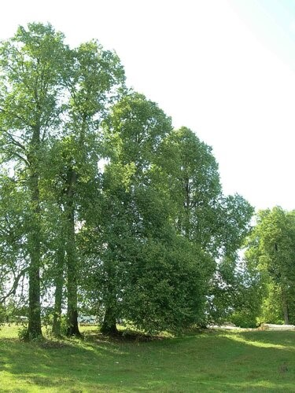
Остатки аллеи
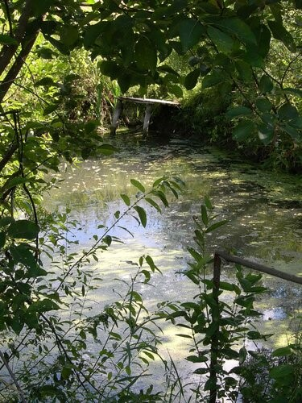
Барские пруды
Бывшее поместье И.Л.Голенищева-Кутузова и его зятя Ф.Н.Глинки. Старые деревья липового парка, малый и большой пруды у дороги на Кузнецово. В «парке» сохранилась цепочка лип, несколько серебристых тополей и много, много старых пней. «Парк» спускается по пологому склону к речке Каменка, на которой некогда была мельница с плотиной. За речкой Каменкой шумит на округлом холме сосновый лес. Его раньше называли «бабушкиным». В нем было много славянских курганов, около двухсот.
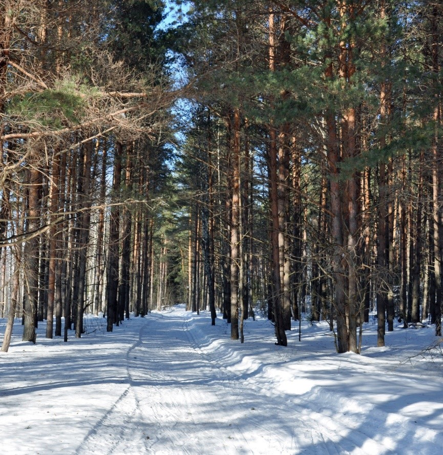